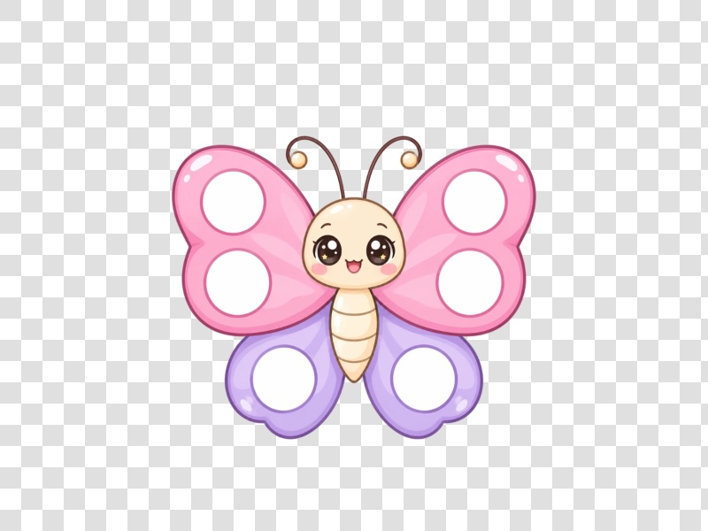

One drop. A clean cut-out.
Nabi lifts the person, pet or object onto a transparent background with Apple's on-device vision.

BeforeAfterNabi lives in your menu bar. Drag any file, press ⌃ ⌘, and drop it on a wing. Photos, videos, PDFs and documents, converted right where they are, entirely on your Mac.
One gesture for every everyday conversion, and a few bits of magic you won't find in a converter.
Nabi lifts the person, pet or object onto a transparent background with Apple's on-device vision.

BeforeAfterVideos, photos and PDFs, shrunk to fit email and chat.
Type something. It slides in behind the subject.
Styled, paginated, with tables and code. Word, RTF, text and HTML too.
Nabi is a cute converter for your Mac.
⌃⌘ anywhere| From | To |
|---|---|
| HEIC | JPG |
| MOV | GIF |
Screenshots and photos become text you can paste.
Photos, PDFs and docs merged in the order you picked them.
Nabi only shows what fits the file you picked, so the wings stay simple. Here's everything that's in there.
Yes. No account, no ads, no subscription. Download it, drag it into Applications, and it's yours.
Nabi isn't from the App Store yet, so the first time you open it macOS asks you to confirm. Open System Settings → Privacy & Security, scroll down and click Open Anyway. You only do this once.
Macs with Apple Silicon on macOS 14 Sonoma or later.
Never. Every conversion happens on your Mac with Apple's own frameworks, and Nabi works without an internet connection.
That's what lets Nabi notice ⌃⌘ and see which file you've selected or are dragging. Nabi never reads what you type.
No. Pages documents go through Apple's free Pages app, and a handful of extra video and audio formats (WebM, MKV, burned-in captions, 9:16) use a small optional add-on Nabi installs for you.
Nabi (나비) is Korean for butterfly. Butterflies are all about transformation, and so is Nabi. It also flaps its wings while it works, which we consider essential.
Nabi is free. Download it, and the butterfly is one ⌃⌘ away.
Drag the butterfly into your Applications folder.
macOS asks you to confirm apps from outside the App Store: System Settings → Privacy & Security → Open Anyway.
So Nabi can hear ⌃⌘. Then select any file and press it.
All versions and notes on GitHub.